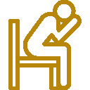

Ansiedade
Quando a mente fica em alerta constante, o corpo também passa a carregar essa tensão.
Com cuidado e atenção, é possível compreender o que essa ansiedade tenta proteger e abrir espaço para outra forma de viver.
Psicanálise clínica
A psicanálise pode ajudar você a construir novos caminhos com mais presença e cuidado.
MINHA ABORDAGEM
Por trás do sofrimento que se repete, existe uma história que merece ser escutada.
Quando a mente fica em alerta constante, o corpo também passa a carregar essa tensão.
Com cuidado e atenção, é possível compreender o que essa ansiedade tenta proteger e abrir espaço para outra forma de viver.
A solidão pode ser sentida mesmo em meio a muitas pessoas, quando há dificuldade de se sentir compreendido.
Nesse cuidado, você pode reencontrar um lugar de acolhimento e reconhecer que não precisa atravessar isso sozinho.
O luto não é apenas a perda de alguém, mas também de sonhos, rotinas e partes de si que ficaram no caminho.
Há espaço para sofrer, lembrar e transformar esse vazio em um processo de cuidado profundo e real.
Quando a segurança parece depender da validação do outro, a relação pode se tornar cansativa e confusa.
Ao compreender esse padrão, é possível recuperar sua autonomia, escuta e presença consigo mesmo.
Os abusos muitas vezes aparecem de formas sutis, deixando dúvidas e uma sensação de não ser bem acolhido.
Com atenção, você pode nomear o que aconteceu, reconhecer seus limites e construir relações mais honestas.

Quando a crítica interna se torna constante, a autoestima deixa de ser um apoio e passa a ser um peso.
Em terapia, é possível desacelerar essa voz tão dura e criar uma relação mais gentil consigo.
O processo terapêutico cria um espaço para reflexão e escuta. Com o tempo, aquilo que antes parecia confuso ganha novos significados, permitindo uma relação mais leve com suas emoções, decisões e vínculos.
Desenvolva a autonomia para ser protagonista da sua própria história. Na terapia, você conquista a clareza necessária para tomar decisões mais alinhadas com quem você é e com o futuro que deseja construir.
Cultive laços mais profundos e verdadeiros. O processo terapêutico ajuda a transformar a maneira como você se conecta com os outros, tornando suas relações mais maduras, saudáveis e autênticas.
Amplie o olhar sobre si mesmo. Ao compreender as raízes das suas emoções e os conflitos internos que muitas vezes agem no silêncio, você ganha ferramentas poderosas para lidar com seus desafios diários.
Encontre leveza no seu dia a dia. Ao dar novo sentido aos traumas e padrões que se repetem, o peso emocional diminui, tornando sua jornada mais tolerável, compreensível e serena.
Como funciona
Atendimento por videochamada, em um ambiente reservado e acolhedor, para que você saiba exatamente como funciona antes de começar.
Você entra em contato via WhatsApp e compartilha brevemente sua necessidade, contexto e disponibilidade.
É feita uma conversa para entender seu momento, alinhar expectativas e definir o melhor caminho.
Com tudo alinhado, o acompanhamento começa de forma prática, respeitando seu ritmo e sua rotina.
Sobre mim
Psicanalista e Contoterapeuta | CBPC 2022-5973
Sou Psicanalista Clínica e Contoterapeuta, com formação continuada em Neurociências e Mediação Judicial.
Atuo com escuta ética e acolhedora, dedicada ao desenvolvimento humano e ao cuidado emocional.
FAQ
Se restou alguma dúvida, este espaço é para você. Aqui você encontra respostas objetivas sobre o processo terapêutico, formato das sessões e agendamento.
Agendar minha primeira sessãoA psicoterapia online acontece por videochamada, pela plataforma Google Meet. Para que a sessão seja tranquila e sigilosa, é importante que você esteja em um local reservado, sem interrupções, e use fones de ouvido.
Sim, funciona muito bem. Na psicanálise, o que realmente importa é a fala de cada pessoa. Por isso, é totalmente possível realizar o acompanhamento online, com a mesma seriedade e profundidade do atendimento presencial. A escolha entre online ou presencial costuma ser uma questão de preferência e conforto.
Meu atendimento é voltado para adolescentes, adultos, casais e pessoas idosas que estejam passando por dificuldades emocionais, conflitos nos relacionamentos, questões de autoestima, ansiedade, depressão e outros desafios da vida. Também acompanho processos de mudança, autoconhecimento e desenvolvimento pessoal ou profissional.
Cada sessão dura entre 50 e 60 minutos.
Geralmente, as sessões acontecem uma vez por semana. A frequência ideal será definida ao longo do processo terapêutico, sempre de acordo com suas necessidades e seu ritmo de evolução.
Você pode agendar sua sessão entrando em contato pelo WhatsApp. Será um prazer encontrar o melhor horário para você.